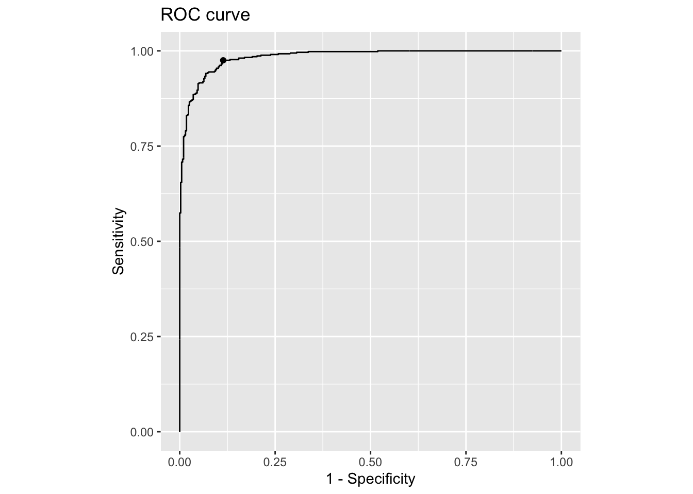
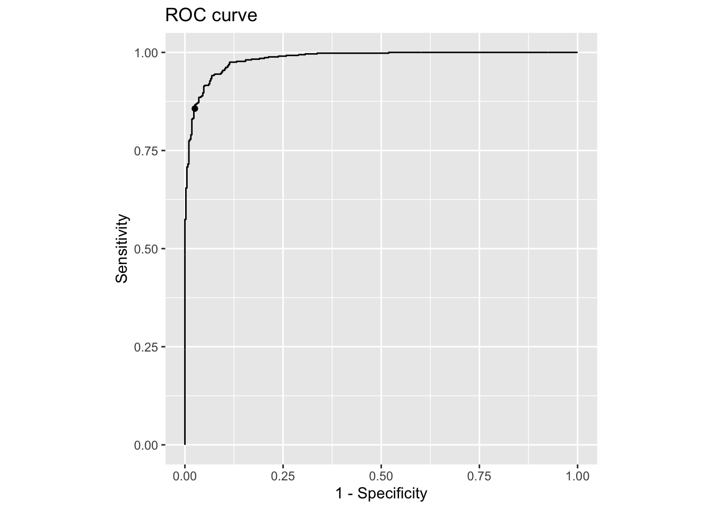
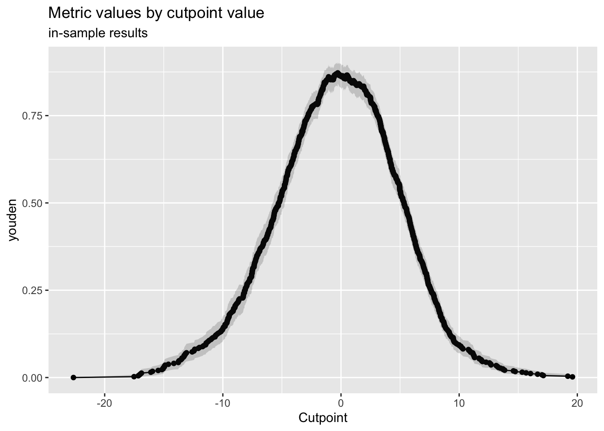

devtools::install_github("cchiquitovalencia/myfinance")La matriz de confusión tiene las claves para entender cualquier modelo de machine learning, una mina de oro con 25 métricas, pero hay 7 de ellas que son especialmente importantes: recall (sensibilidad), specificity (especificidad), el índice J de Youden, precision (precisión), NPV (Valor Negativo Predicho), accuracy (exactitud) y balanced accuracy (exactitud equilibrada). En este post, exploramos qué hace que estos siete sean esenciales, cómo funcionan y por qué son la columna vertebral del aprendizaje automático.
Usaremos los datos de este post. Lo que he hecho es crear un paquete de R para que puedas instalarlo con el siguiente comando:
Si obtienes algo parecido a esto, estás listo para continuar:
A grandes rasgos lo que hace este paquete es replicar el flujo de trabajo visto en la primera parte de la serie, para que usar los mismos datos en la evaluación del modelo. Si te sientes un poco aventurer@ puedes crear un branch para modificar la función main_analysis() y aplicar el flujo a otros datos, no tiene que ser el DJI, puedes usar el que desees.
Y con el siguiente código ya tendras el resultado del modelo de regresión logística.
library(myfinance)
library(caret)
# Función para calcular los resultados tanto de train como de test
calculate_results <- function(model, data) {
# Realizar predicción
predictions <- predict(model, data)
# Convertir predicciones en probabilidades
probabilities <- 1 / (1 + exp(-predictions))
# Determinar la dirección basada en el umbral de 0.5
direction <- ifelse(probabilities > 0.5, 1, 0)
# Crear la matriz de confusión
confusion <- confusionMatrix(factor(direction), factor(data$Direction), mode = "everything")
# Devolver los resultados
list(
predicted_direction = direction,
confusion_matrix = confusion,
predictions = predictions
)
}
# Ejecutar el análisis principal
modelo <- main_analysis()[1] "Iniciando el análisis principal..."
[1] "Cargando datos..."
[1] "Datos cargados exitosamente. Número de filas: 4594"
[1] "Creando variables predictoras..."
[1] "Variables predictoras creadas exitosamente."
[1] "Creando tabla de datos..."
[1] "Tabla de datos creada exitosamente."
[1] "Dividiendo datos en train y test..."
[1] "Datos divididos exitosamente. Train: 3675 Test: 919"
[1] "Normalizando datos..."
[1] "Normalizados"
[1] "Datos normalizados exitosamente."
[1] "Construyendo y entrenando el modelo..."[1] "Modelo construido y entrenado exitosamente."
[1] "Haciendo predicciones para train..."
[1] "Predicciones para train completadas."
[1] "Evaluando modelo en train..."
[1] "Evaluación en train:"
[1] "Haciendo predicciones para test..."
[1] "Predicciones para test completadas."
[1] "Evaluando modelo en test..."
[1] "Evaluación en test:"
[1] "Análisis completado exitosamente."
[1] "Proceso finalizado."# Calcular resultados para train
train_results <- calculate_results(modelo$modelo, modelo$normalized$train)
train_confusion <- train_results$confusion_matrix
# Calcular resultados para test
test_results <- calculate_results(modelo$modelo, modelo$normalized$test)
test_confusion <- test_results$confusion_matrixRevisamos resultados de los datos de entrenamiento del modelo:
train_confusionConfusion Matrix and Statistics
Reference
Prediction 0 1
0 1152 108
1 134 2248
Accuracy : 0.9336
95% CI : (0.925, 0.9414)
No Information Rate : 0.6469
P-Value [Acc > NIR] : <2e-16
Kappa : 0.8539
Mcnemar's Test P-Value : 0.108
Sensitivity : 0.8958
Specificity : 0.9542
Pos Pred Value : 0.9143
Neg Pred Value : 0.9437
Precision : 0.9143
Recall : 0.8958
F1 : 0.9049
Prevalence : 0.3531
Detection Rate : 0.3163
Detection Prevalence : 0.3460
Balanced Accuracy : 0.9250
'Positive' Class : 0
test_confusionConfusion Matrix and Statistics
Reference
Prediction 0 1
0 369 37
1 26 487
Accuracy : 0.9314
95% CI : (0.9131, 0.9469)
No Information Rate : 0.5702
P-Value [Acc > NIR] : <2e-16
Kappa : 0.8606
Mcnemar's Test P-Value : 0.2077
Sensitivity : 0.9342
Specificity : 0.9294
Pos Pred Value : 0.9089
Neg Pred Value : 0.9493
Precision : 0.9089
Recall : 0.9342
F1 : 0.9213
Prevalence : 0.4298
Detection Rate : 0.4015
Detection Prevalence : 0.4418
Balanced Accuracy : 0.9318
'Positive' Class : 0
Un problema que debemos resolver desde un principio es que estas métricas tienen múltiples nombres dependiendo del campo en el que te encuentres. Por ejemplo, la sensibilidad se llama recall en aprendizaje automático, tasa de positivos verdaderos en medicina y probabilidad de detección en ingeniería. Es la misma cosa, pero los nombres cambian dependiendo de con quién estés hablando, y eso puede ser confuso.
Para calcular la sensibilidad, solo necesitamos la columna izquierda de la matriz de confusión. Dividimos los verdaderos positivos entre todos los casos positivos reales. En otras palabras, la sensibilidad mide el porcentaje de verdaderos positivos que el modelo identifica correctamente. Por eso, el segundo nombre para la sensibilidad es tasa de positivos verdaderos.
\[ Sensibilidad=TPR=\frac{TP}{TP+FN} \]
En nuestro ejemplo del DJI, se trata del porcentaje de subidas de la acción que nuestro modelo detectó, lo que explica la tercera definición: probabilidad de detección. La sensibilidad oscila entre 0 y 1, o entre 0% y 100%, donde 1 indica una sensibilidad perfecta (sin falsos negativos) y 0 significa que no se puede detectar ningún caso positivo.
En nuestro ejemplo, la sensibilidad es alta 89.58% porque detectamos a 1152 subidas de precio, y una alta sensibilidad es lo que usualmente queremos. Especialmente en medicina, la sensibilidad es crucial para pruebas de detección como la detección de cáncer o enfermedades infecciosas como COVID-19. Si una prueba tiene baja sensibilidad, significa que muchos pacientes con cáncer son mal diagnosticados como sanos, lo que lleva a retrasos peligrosos en el tratamiento. Una prueba con alta sensibilidad asegura que la mayoría de los pacientes con la condición son identificados, incluso si genera algunos falsos positivos, que pueden ser seguidos con pruebas más específicas.
En aprendizaje automático, la sensibilidad es esencial para la detección de fraude o la detección de anomalías, donde los casos positivos, como las transacciones fraudulentas con tarjetas de crédito, son raros pero críticos. Un modelo con alta sensibilidad asegura que la mayoría de las actividades fraudulentas son detectadas, incluso si genera algunas falsas alarmas.
Sí, podemos maximizar la sensibilidad aumentando el costo de los falsos negativos con el paquete cutpointr y la función cutpoint().
library(tidyverse)
d2 <- modelo$normalized$test |>
as.data.frame() |>
mutate(pred_probs = test_results$predictions,
pred_classes = factor(test_results$predicted_direction))
library(cutpointr, verbose = FALSE)
sensitive_case <- cutpointr(
data = d2,
x = pred_probs,
class = Direction,
method = minimize_metric,
metric = misclassification_cost,
cost_fp = 1,
cost_fn = 5
)
sensitive_case |>
t() [,1]
direction ">="
optimal_cutpoint -1.049363
method "minimize_metric"
misclassification_cost 110
acc 0.9368879
sensitivity 0.9751908
specificity 0.8860759
AUC 0.9839067
pos_class 1
neg_class 0
prevalence 0.570185
outcome "Direction"
predictor "pred_probs"
data tbl_df,2
roc_curve roc_cutpointr,10
boot NA sensitive_case |>
plot_roc()
Por ejemplo, si establecemos el costo de los falsos negativos en cinco veces el costo de los falsos positivos, podemos aumentar la sensibilidad de un 89.58% a un asombroso 97.52%.
La sensibilidad nos ayuda a detectar tantos positivos verdaderos como sea posible, lo cual es crucial para escenarios como la detección del cáncer, pero aquí está el problema: aumentar demasiado la sensibilidad a menudo aumenta los falsos positivos, lo que puede ser peligroso en otros casos, como en la conducción autónoma, donde un coche autónomo podría confundir una sombra con un peatón, activando una frenada de emergencia innecesaria y un riesgo de accidente. En situaciones donde minimizar los falsos positivos y maximizar los verdaderos negativos es lo que más importa, una alta especificidad es clave. Así que hablemos de la especificidad.
Desafortunadamente, la especificidad también tiene muchos nombres. En medicina, se le llama tasa de negativos verdaderos; en aprendizaje automático, a veces se la conoce como selectividad; en ingeniería, algunos la llaman probabilidad de predicción correcta, un término que personalmente encuentro particularmente intuitivo. Para calcular la especificidad, solo necesitamos la columna derecha de la matriz de confusión. Dividimos los verdaderos negativos entre todos los casos negativos reales.
\[ Especificidad=TNR=\frac{TN}{TN+FP} \]
En palabras sencillas, la especificidad mide el porcentaje de negativos reales que el modelo identifica correctamente como negativos. Por eso, otro nombre para la especificidad es la tasa de negativos verdaderos. En nuestro ejemplo, la especificidad nos dice cuántos no sobrevivientes el modelo clasificó correctamente como tales. La especificidad oscila entre 0 y 1, o entre 0% y 100%, donde 1 indica un modelo perfecto, sin falsos positivos, y 0 significa que no puede descartar los casos negativos en absoluto.
En nuestro ejemplo, la especificidad es sólida, con un 95.42%, porque solo etiquetamos incorrectamente a 108 bajadas como subidas, mientras que la sensibilidad se centra en los positivos, la especificidad se centra en evitar las falsas alarmas, lo cual es crucial en ciertos escenarios de alto riesgo. Por ejemplo, en medicina, una prueba con baja especificidad podría etiquetar falsamente a personas sanas como tener cáncer, lo que lleva a ansiedad innecesaria, biopsias, quimioterapia o incluso cirugía. Además, una baja especificidad en una prueba de una enfermedad rara puede abrumar a los sistemas de salud con falsas alarmas. Por eso, a veces necesitamos maximizar la especificidad y mantener los falsos positivos tan bajos como sea posible.
Sí, podemos hacerlo aumentando el costo de los falsos positivos usando el paquete cutpointr en R. Podemos desplazar el umbral de decisión para minimizar los falsos positivos y priorizar los verdaderos negativos, incluso si eso significa perder algunos verdaderos positivos.
sensitive_case <- cutpointr(
data = d2,
x = pred_probs,
class = Direction,
method = minimize_metric,
metric = misclassification_cost,
cost_fp = 5,
cost_fn = 1
)Assuming the positive class is 1Assuming the positive class has higher x valuesMultiple optimal cutpoints found, applying break_ties.sensitive_case |>
t() [,1]
direction ">="
optimal_cutpoint 1.727427
method "minimize_metric"
misclassification_cost 125
acc 0.9075082
sensitivity 0.8568702
specificity 0.9746835
AUC 0.9839067
pos_class 1
neg_class 0
prevalence 0.570185
outcome "Direction"
predictor "pred_probs"
data tbl_df,2
roc_curve roc_cutpointr,10
boot NA sensitive_case |>
plot_roc()
Por ejemplo, si establecemos el costo de los falsos positivos en cinco veces el costo de los falsos negativos, podemos hacer que la especificidad pase de un impresionante 95.42% a un increíble 97.47%.
Como puedes ver, los científicos de datos enfrentan un desafío complejo: aumentar la sensibilidad para detectar todos los positivos posible corre el riesgo de aumentar las falsas alarmas, mientras que aumentar la especificidad para proteger las transacciones legítimas podría significar perder algunas actividades fraudulentas. Es aquí donde entra en juego el índice J de Youden. El índice J de Youden ayuda a encontrar un punto óptimo entre sensibilidad y especificidad, maximizando la efectividad general del modelo. Así que hablemos de eso.
El índice J de Youden es increíblemente útil cuando tanto los falsos positivos como los falsos negativos tienen consecuencias significativas. Es por eso que el índice J de Youden maximiza los verdaderos positivos y minimiza los falsos positivos. Un dato curioso: el índice J de Youden también se conoce como información basada en corredores de apuestas porque mide cuánto más informado está una prueba o modelo en comparación con el azar. El término proviene del mundo de las apuestas, donde los corredores de apuestas dependen de la información para predecir los resultados mejor que el azar.
Para calcular el índice J de Youden, combinamos sensibilidad y especificidad. Dado que la suma simple de sensibilidad y especificidad oscila entre 1 y 2, lo que no es fácil de interpretar, el menos uno en la fórmula de J normaliza la escala para que oscile entre 0 y 1, lo que es fácil de interpretar.
\[ J=Sensibilidad+Especificidad-1 \]
Específicamente, J igual a 0 indica que la prueba no funciona mejor que el azar y, por lo tanto, no tiene información útil. J igual a 1 indica que la prueba distingue perfectamente entre positivos y negativos. En resumen, el índice J de Youden o información nos dice qué tan bien una prueba o modelo mejora la toma de decisiones en comparación con el azar.
En R, hay dos formas fáciles de calcular el índice J de Youden: una es usando la función youden del paquete cutpointr,
indexJ <- youden(tp = train_confusion$table[1],
tn = train_confusion$table[4],
fp = train_confusion$table[3],
fn = train_confusion$table[2])
indexJ youden
[1,] 0.8499605y la otra es usando el resumen de la función epi.tests del paquete epiR:
summary(epiR::epi.tests(train_confusion$table)) |>
gt::gt() |>
gt::tab_style(
style = list(
gt::cell_fill(color = "orange"),
gt::cell_text(weight = "bold")
),
locations = gt::cells_body(
columns = statistic,
rows = statistic >= "youden"
)
)| statistic | est | lower | upper |
|---|---|---|---|
| ap | 0.34596376 | 0.33050644 | 0.36166868 |
| tp | 0.35310269 | 0.33756651 | 0.36887498 |
| se | 0.89580093 | 0.87779966 | 0.91196838 |
| sp | 0.95415959 | 0.94492020 | 0.96224718 |
| diag.ac | 0.93355299 | 0.92497323 | 0.94142858 |
| diag.or | 178.94527363 | 137.53368835 | 232.82594497 |
| nndx | 1.17652523 | 1.14388264 | 1.21548056 |
| youden | 0.84996053 | 0.82271986 | 0.87421556 |
| pv.pos | 0.91428571 | 0.89744763 | 0.92915893 |
| pv.neg | 0.94374475 | 0.93372253 | 0.95265725 |
| lr.pos | 19.54173147 | 16.23853945 | 23.51684830 |
| lr.neg | 0.10920507 | 0.09301233 | 0.12821685 |
| p.rout | 0.65403624 | 0.63833132 | 0.66949356 |
| p.rin | 0.34596376 | 0.33050644 | 0.36166868 |
| p.tpdn | 0.04584041 | 0.03775282 | 0.05507980 |
| p.tndp | 0.10419907 | 0.08803162 | 0.12220034 |
| p.dntp | 0.08571429 | 0.07084107 | 0.10255237 |
| p.dptn | 0.05625525 | 0.04734275 | 0.06627747 |
Un \(J\) de 85.00% es fuerte. Nos dice que el modelo funciona mejor que el azar, pero podría ser perfeccionado para equilibrar mejor la sensibilidad y la especificidad. Si te preguntas cómo maximizar el índice J de Youden, la respuesta es usando la misma función cutpointr que usamos para maximizar la sensibilidad y la especificidad.
improve_j <- cutpointr(
data = d2,
x = pred_probs,
class = Direction,
method = maximize_metric,
metric = youden,
boot_runs = 1000
)Assuming the positive class is 1Assuming the positive class has higher x valuesRunning bootstrap...improve_j |> t() [,1]
direction ">="
optimal_cutpoint -0.2763423
method "maximize_metric"
youden 0.8724853
acc 0.9368879
sensitivity 0.9408397
specificity 0.9316456
AUC 0.9839067
pos_class 1
neg_class 0
prevalence 0.570185
outcome "Direction"
predictor "pred_probs"
data tbl_df,2
roc_curve roc_cutpointr,10
boot tbl_df,23 improve_j |>
plot_metric()
Lo que quiero mostrarte es que, aumentando ligeramente la sensibilidad del 89.58% al 94.08% y disminuyendo ligeramente la especificidad del 95.42% al 93.16%, podríamos aumentar el índice J de Youden del 85.00% al 87.25%. ¡Genial!, lo que hace que nuestro modelo sea más preciso.
Y hablando de precisión, debemos discutirla a continuación, porque la precisión es una de las métricas más importantes y ampliamente utilizadas derivadas de la matriz de confusión. La precisión, también conocida como valor predictivo positivo, mide qué tan precisas son las predicciones positivas. Es el porcentaje de resultados positivos que son correctos, lo que muestra qué tan probable es que un resultado positivo sea verdadero.
Durante los primeros días de la pandemia de COVID-19, la sensibilidad fue clave para detectar a tantas personas infectadas como posible, pero más tarde, cuando la propagación se desaceleró y las pruebas se multiplicaron, la precisión se convirtió en el foco de atención.
Para calcular la precisión, nos centramos en la primera fila de la matriz de confusión, los positivos predichos. Es la proporción de verdaderos positivos entre todos los casos positivos predichos. La precisión oscila entre 0 y 1, o entre 0% y 100%. Un puntaje de 1 significa que todas las predicciones positivas fueron correctas, sin falsos positivos, mientras que 0 significa que todas fueron incorrectas.
\[ Precisión=PPV=\frac{TP}{TP+FP} \]
En nuestro ejemplo, una precisión del 91.43% nos dice que el 91.43% de las acciones que el modelo etiquetó como subidas realmente subieron. Eso es sólido, ya que solo 108 de los 1260 movimientos hacia arriba predichos fueron mal clasificados.
Pero, ¿por qué la precisión es tan importante? Piensa en los filtros de correo no deseado. Una alta precisión asegura que cuando un correo aterriza en tu bandeja de spam, es casi seguro que es basura. Por otro lado, si tienes una baja precisión, te encontrarás revolviendo spam para encontrar ese correo urgente de tu jefe. Es un infierno, ¿no? La precisión también se puede calcular usando sensibilidad, especificidad y prevalencia, aunque idealmente, es un poco pesado y difícil de recordar.
\[ PPV=\frac{Sensibilidad*Prevalencia}{Sensitividad*Prevalencia+(1-Especificidad)*(1-Prevalencia)} \]
Lo que es fácil de recordar es que cuando hay un valor predictivo positivo, también debe haber un valor predictivo negativo. De hecho, el valor predictivo negativo nos dice cuántos resultados de prueba negativos son precisos.
Para calcular el valor predictivo negativo (VPV), solo necesitamos la fila inferior de la matriz de confusión, los negativos predichos. Dividimos el número de verdaderos negativos entre el total de predicciones negativas. El valor predictivo negativo es crucial porque construye confianza en los resultados negativos.
\[ NPV=\frac{TN}{TN+FN} \]
Por ejemplo, en la detección del cáncer, si tu prueba da negativo y el VPV es del 99%, hay un 99% de probabilidad de que realmente no tengas cáncer. Eso es muy tranquilizador. Solo hay un 1% de posibilidad de que haya un error. Pero si el VPV es del 94.37%, como en nuestro ejemplo, significa que el 94.37% de las veces un resultado negativo es correcto, pero que hay un 5.63% de probabilidad de que el resultado negativo sea incorrecto y que realmente tengas cáncer. Eso probablemente no te tranquilizaría mucho, ya que es un riesgo bastante grande. Por eso, el VPV es realmente importante porque afecta directamente cuánto puedes confiar en un resultado negativo.
El valor predictivo positivo nos dice cuántas de nuestras predicciones positivas son realmente correctas, mientras que el valor predictivo negativo mide cuántas de nuestras predicciones negativas son precisas. Ambas son útiles, pero se centran solo en un lado de los resultados de las predicciones, ya sean positivos o negativos. Pero, ¿qué pasa si necesitamos evaluar la corrección general de todas las predicciones, tanto positivas como negativas?
Ahí es donde entra en juego la exactitud. La exactitud nos da una visión general del rendimiento midiendo la proporción de todas las predicciones correctas, independientemente de la clase. De hecho, ¿qué métricas usas y cuáles son las principales en tu opinión? Realmente quiero saber tus pensamientos. La fórmula para la exactitud es sencilla: suma los verdaderos positivos y los verdaderos negativos, y divide entre el número total de casos.
\[ Exactitud=\frac{TP+TN}{total} \]
Eso es todo, bastante sencillo, ¿verdad? Mientras que una mayor exactitud es generalmente lo que queremos, la exactitud puede ser engañosa al lidiar con clases ligeramente desequilibradas, donde un resultado sobrepasa ligeramente al otro. Es por eso que tenemos una métrica más robusta como la exactitud equilibrada.
\[ \text{Exactitud equilibrada}=\frac{Sensibilidad+Especificidad}{2} \]
La exactitud equilibrada ofrece una solución promediando la sensibilidad y la especificidad, asegurando que ambas clases reciban una consideración igual. En nuestro ejemplo, una exactitud equilibrada del 92.50% está solo 0.86% por debajo de la exactitud general del 93.36%, lo que sugiere que las clases están relativamente equilibradas, pero eso no es siempre el caso. Por eso, no confío en la exactitud si no veo una matriz de confusión o una exactitud equilibrada comparada con la exactitud. Podemos calcular fácilmente la exactitud equilibrada usando la función de confusionMatrix() del paquete caret.
Mientras que la exactitud equilibrada es útil para conjuntos de datos ligeramente desequilibrados, a veces la exactitud equilibrada puede ser casi la mitad de la exactitud, lo que indica que nuestro conjunto de datos está muy sesgado y no balanceado.
casos <- 10000
prop_positivos <- 0.05
cant_positivos <- casos * prop_positivos
cant_negativos <- casos - cant_positivos
actual <- c(rep(1, cant_positivos), rep(0, cant_negativos))
predicciones <- rep(0, casos)
ejemplo <- confusionMatrix(factor(predicciones), factor(actual))Warning in confusionMatrix.default(factor(predicciones), factor(actual)):
Levels are not in the same order for reference and data. Refactoring data to
match.ejemploConfusion Matrix and Statistics
Reference
Prediction 0 1
0 9500 500
1 0 0
Accuracy : 0.95
95% CI : (0.9455, 0.9542)
No Information Rate : 0.95
P-Value [Acc > NIR] : 0.5119
Kappa : 0
Mcnemar's Test P-Value : <2e-16
Sensitivity : 1.00
Specificity : 0.00
Pos Pred Value : 0.95
Neg Pred Value : NaN
Prevalence : 0.95
Detection Rate : 0.95
Detection Prevalence : 1.00
Balanced Accuracy : 0.50
'Positive' Class : 0
Por ejemplo, consideremos un conjunto de datos con 10^{4} casos, donde solo el 5% son positivos. En este caso, un modelo puede lograr una asombrosa exactitud del 95.00% simplemente prediciendo negativo todas las veces, pero falla al detectar cualquier positivo, lo que resulta en un 100% de predicciones positivas incorrectas, lo cual es inaceptable. Sin ver la matriz de confusión, no somos conscientes de este desastre.
Sin embargo, la exactitud equilibrada de 50.00% revela esta debilidad al dar una puntuación mucho más baja, indicando que algo está seriamente mal. Centrarse solo en la exactitud puede ocultar muchos errores, lo que lleva a malas decisiones. A veces, saber cuán impreciso es nuestro modelo puede ser muy útil porque revela dónde y cuántas veces nuestro modelo está equivocado.
Métricas como la tasa de malclasificación y la tasa de descubrimiento falso son increíblemente prácticas y merecen su propio espacio de expliación. Por lo tanto, si quieres que tu modelo sea sólido y confiable, o si necesitas explicar por qué algunos resultados del modelo no deben confiarse, debes ver otros de mis posts.
Cómo citar
BibTeX
@online{chiquito_valencia2025,
author = {Chiquito Valencia, Cristian},
title = {Entendiendo La Matriz de Confusión},
date = {2025-04-08},
url = {https://cchiquitovalencia.github.io/posts/2025-04-08-predictions_on_stocks2/},
langid = {en}
}
Por favor, cita este trabajo como:
Chiquito Valencia, Cristian. 2025. “Entendiendo La Matriz de
Confusión.” April 8, 2025. https://cchiquitovalencia.github.io/posts/2025-04-08-predictions_on_stocks2/.